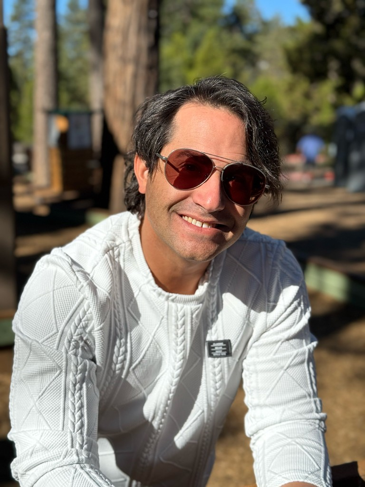

Morongo Unified School District · Area 5
Juan Carlos
Introduction
I’m not a politician. I’m a dad, a concerned parent, and a Joshua Tree neighbor.
I care deeply about the community where my children are growing up. They attend one of the schools where closures have already been discussed. This is not a distant policy debate. In Area 5 — especially Landers and Yucca Mesa — it is a real and imminent risk, with real implications for our families and our community.
We need someone willing to represent those families when those decisions get made. My commitment is clear: keep our schools open, and show the community the results before making decisions that cannot be undone.
That’s why I’m running for the Morongo Unified School District School Board, Area 5.
The reason
Why I’m Running
Our schools should be a beacon of hope, not a budget line item. They are more than buildings. They are where our children learn, where families meet one another, and where communities are built.
Decisions about their future should not be made without the people most affected. Parents, teachers, staff, students, and communities deserve a meaningful voice — early, not after decisions are made.
School closure is an absolute last resort, and in almost every case, the wrong answer.
Last resort means last, not first. I accept that MUSD has a real financial challenge. Closing a school is not the answer. It is not a spreadsheet exercise. Teachers and staff lose jobs. Neighbors lose livelihoods. In a rural district, longer bus rides are not an inconvenience — they can decide whether a child gets to school. Families leave. You cannot undo it.
The district’s own Enrollment Committee said MUSD should refrain from closing schools while alternatives are tried. I agree. I will bring a parent’s perspective to the Board, ask hard questions, and insist we recover attendance, bring families back, and put money at school sites before anyone talks about closing a school. Do the reversible things before the irreversible thing.
Priorities
What I Stand For
-
Keep Our Schools Open
School closure is an absolute last resort, and in almost every case, the wrong answer. I will fight to keep our neighborhood schools open and require ironclad evidence before any irreversible decision.
-
Give Parents a Seat at the Table
Families deserve a real voice in decisions that affect their children and communities — especially in Area 5, where the risk feels most immediate. Those voices should be heard early, not after a recommendation is already on the table.
-
Put Students First
Every decision should begin with a simple question: What is best for our kids? Strong classrooms, supported teachers, and a fair shake for every student.
-
Listen, Learn, and Be Accountable
I won’t pretend to arrive with every answer. I will do the work, ask hard questions, and listen to the people who know our schools best. For every major decision: name an owner, measure the result, and publish it. The community should be able to see the chain from promise to outcome.
What we build
A Real Vision
Closing schools is a failure of imagination, not the only path forward.
-
Real Support in Every Classroom
Kids who are behind need intervention and aides that work. Fewer combo classes. Every child gets a fair shake.
-
Put Money at the School
Start with overhead, not school closures. Put the savings where students and teachers are — at the school. A larger central office does not teach a single child to read.
-
Keep Kids with Trusted Teachers
A K–8 path at Joshua Tree Elementary or Friendly Hills gives families a gradual transition instead of a hard break at middle school. It is another doorway to stay in the district — continuity for families and communities that already trust that school, and a way to keep more of them.
-
Science in the Desert
Astronomy, ecology, engineering, hands-on discovery. We have an extraordinary landscape. Use it to broaden what we offer and connect kids to real science.
-
Spread What Works
Friendly Hills has attracted homeschool families. Let’s keep doing that, and spread what works so more campuses can do the same. Great programs grow enrollment, and enrollment is part of the solution.
-
Give Families a Reason to Return
Homeschool and charter families live in our boundaries. Music and art in every school. Strong middle-school options. Give them a reason to come back.

Meet the candidate
About Juan Carlos
I’m a Joshua Tree parent, technology and product leader, and longtime believer in community service.
Throughout my career, I’ve worked to bring people together around difficult problems and turn ideas into action. I founded a nonprofit, have organized grassroots community efforts, mentored young professionals, and coached my daughter’s soccer team.
I’m a parent who raised his hand.
I never expected to run for School Board. When it became clear that our neighborhood schools were at risk and our community needed someone willing to represent us, I stepped forward.
I will fight to keep our schools open. Families deserve a real voice, full transparency, and a Board willing to say no. Now we have an opportunity to earn that seat at the table.
Join the Campaign
Help keep our neighborhood schools open. Volunteer, donate, follow along, and share the message with families across Area 5.
@withjuancarlos · Candidate for MUSD School Board · Area 5